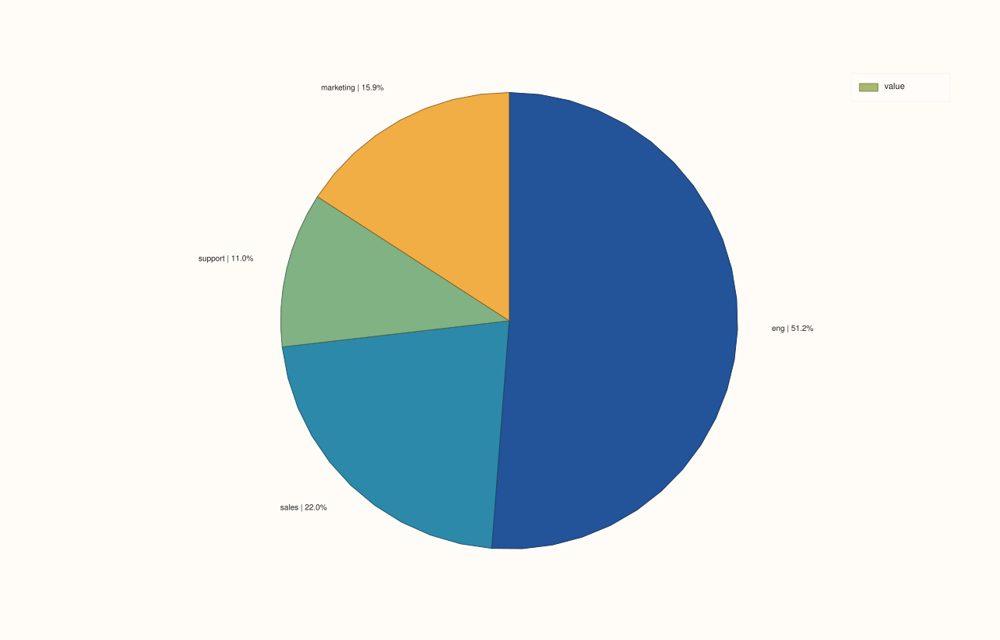

ThreadPlotAccessor::pie¶
Back to ThreadPlotAccessor API Reference
Signatures¶
ThreadPlotAccessor::pie() const -> pluss::pl::Studio
ThreadPlotAccessor::pie(const PiePlotOptions& options) const -> pluss::pl::Studio
ThreadPlotAccessor::pie(const Thread& labels) const -> pluss::pl::Studio
ThreadPlotAccessor::pie(const Thread& labels, const PiePlotOptions& options) const -> pluss::pl::Studio
What It Does¶
Draws a pie chart from the bound thread’s values, with slice labels coming either from an
explicit companion labels thread or (if omitted) from the wrapped frame’s own row
labels — the single-series specialization of
DataFramePlotAccessor::pie.
Important
Non-positive and non-finite values are silently dropped, not zero-sized slices
Exactly like DataFramePlotAccessor::pie, only rows
where the bound thread’s value is both finite and strictly greater than zero survive. A
thread with no positive finite values throws "DataFrame::plot().pie: feature 'value' has no positive finite values" — see that page’s important callout for the full rule,
including how percentages are computed against the filtered total.
Parameters¶
labels (const Thread&, optional)
A companion thread whose values label each slice. Must match the bound thread’s size,
or the call throws "Thread::plot: thread size mismatch". Omitted falls back to the
wrapped frame’s own row labels — see line()’s row-label inheritance rule.
options (PiePlotOptions)
The identical struct documented on
DataFramePlotAccessor::pie
(show_label, show_percent, show_value, precision, separator).
Returns¶
pluss::pl::Studio
A figure with one pane containing a single pie trace.
Examples¶
Example 1. An explicit labels thread.
using namespace pluss::table;
auto spend = Thread(pluss::make_series({420.0, 180.0, 90.0, 130.0}));
spend = spend.name("spend");
auto category = Thread(pluss::make_note({"Engineering", "Sales", "Support", "Marketing"}));
category = category.name("category");
auto chart = spend.plot().pie(category);
chart.show();

Example 2. No labels: falls back to the bound thread’s own row labels.
auto labeled_spend = Thread(pluss::make_series({420.0, 180.0, 90.0, 130.0}))
.label().set(Thread(pluss::make_note({"eng", "sales", "support", "marketing"})));
auto chart = labeled_spend.plot().pie();
chart.show();

Example 3. An explicit PiePlotOptions.
PiePlotOptions options;
options.show_value = true;
options.separator = " — ";
options.precision = 0;
auto chart = spend.plot().pie(category, options);
chart.show();
Notes¶
Only finite, strictly positive values are plotted; everything else is silently dropped — see the important callout above.
labelsomitted falls back to the wrapped frame’s own row labels — seeline()’s row-label inheritance rule.An entirely-filtered-out thread throws rather than producing an empty chart.
Returns a
pluss::pl::Studio— seeline()for how to view or save the result.
See Also¶
DataFramePlotAccessor::pie: the method this delegates to.ThreadPlotAccessor::bar: a composition-friendly alternative when exact comparison between category sizes matters more than “share of a whole.”